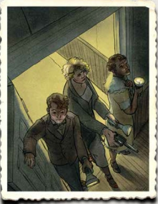

克蘇魯的呼喚 Call of Cthulhu 創造角色與遊戲系統
~遊戲的背景，是你我所在的這個世界。你將扮演一名正常的人類，面對著熟悉卻無知的殘酷真實。~
創造角色
在克蘇魯的呼喚中，每位玩家都需要製作一張調查員。這是一群發掘深層秘密的人，這是一群搜索遺
忘之地的人，這是一群用禁忌知識武裝自己頭腦，正面應對克蘇魯神話中那些毛骨悚然之物的人。
作為團隊來講，調查員們各有豐富多彩的背景和千奇百怪的職業—，每一個都會給團隊帶來不同的變化。
他們因為朋友之義聚在一起，或因為共同目標成為同路人，但最終，會一同堅定地對抗襲來的危難。
創造一個角色來進入遊戲之中。包括下面五個部分：
屬性：角色的基本素質。八個主要屬性（通常擲骰決定）決定了角色的骨幹。當他的年齡
和運氣被給定後。我們就能依照八個主要屬性，聯動決定她的其他所有衍生屬性。
職業：角色以什麼維生呢？職業決定了他技能上的骨幹。記得，不要忘了填上代表財力的
信用評級技能，即使她需要乞討才能活下去。
技能：技能決定他所能辦到的特定任務，包括戰鬥能力、探索能力、專門知識等。角色的
主要技能大多由他的職業所決定，另一半則由她的興趣所決定。所有技能都會用"（括號）"
標出它的基礎值，這代表技能在完全未訓練時的基本成功率。
背景故事：決定你該如何扮演角色，包括個性、信念、外表描述、姓名等。這部份完全由你的創意所決定。
裝備：永遠做好準備。填上你的資產、隨身物品、特殊設備等。你通常可以向守密人免費爭取一套生財工具。
檢定（成功程度）
每個遊戲都會有一套機制，來檢定遊戲中的角色進行挑戰或衝突時的結果。
COC 7 的檢定使用的是百面骰（稱為1d100），由一顆十位骰、一顆個位骰，共兩顆十面骰所組成。
檢定的方式如下：首先，確認角色在挑戰與衝突所使用的數值，視情況可能是某屬性值或是技能值。
接著，丟下骰子，會有下面六種成功程度：
大成功（critical）：1！奇蹟式的表現。
極限（extreme）：小於五分之一數值。接近人類極限的表現。
艱難（hard）：小於二分之一數值。令人讚嘆的表現。
一般（regular）：小於該數值。順利完成了你的任務。
失敗（failure）：普通地擲出大於該數值 。這件事情難倒你了。
大失敗（fumble）：擲出 96~00 （或 00）。呃，事情還能被你搞得更糟嗎？
挑戰與衝突
當角色面前有個單純的阻礙（一道鎖上的門、敵人佈下的監視網、難以理解的景象等），
她嘗試去克服時，進行一次挑戰。當你描述了她的目的與手段時，守密人會告訴你該檢定
要用到的技能或是屬性，以及該擲骰所對應的難度水準：極限？困難？一般？
骰子一旦擲下，她就會如你所描述一般地進行這個挑戰。如果成功，由你來描述後果。如果失敗，則由你的守密人來描述後果。
記得，當你成功使用過某技能，請在技能旁的格子打勾，代表你獲得了成長機會。
除了難度水平外，守密人還有第二個調整難度的手段：他可以要求你在檢定中加入一顆到兩顆的懲罰骰或獎勵骰。每有一顆懲罰骰/獎勵骰，你在檢定時就多擲一顆十位骰，
如果這是懲罰骰，取大的那個十位數字作為擲骰結果；如果是獎勵骰則取小的。
如果角色想做的事包含與另一個角色（通常是 NPC ）的對抗時，則進行一次衝突。在這樣的情況下，你與對方各依所需技能或屬性丟 1d100 進行對立擲骰：
(1)大成功 勝過 極限
(2)極限 勝過 困難
(3)困難 勝過 一般
(4)一般 勝過 失敗
(5)失敗 勝過 大失敗
如果擲出平手，通常以角色的技能值高低來決定結果。
當骰子落下以後......
1 骰子扔下，就接受結果
記住，一旦擲下骰子，就不允許討價還價。如果檢定失敗，角色就將在那裡花上相應的時間與代價。
2 彌補失敗
有兩種檢定失敗的彌補方式，當檢定失敗時，考慮看看：強推（pushed roll）、用幸運購買。
強推可以讓你重新擲一次骰子，但是如果失敗將會遭遇到無法彌補的後果。當你想要強推，告訴守密人你會進行怎樣的進一步嘗試，守密人則會預示失敗的後果，同意後
才擲下骰子。強推是角色有失敗意識與再嘗試之自由下進行的最後一博。
第二種方式是使用幸運，你可以用幸運值購買骰子點數，每支付 1 點幸運值，可以讓檢定的骰面減少 1 點。這是一個可選規則，問問你的守密人這規則是否有開放。
這兩種彌補失敗的方式只能二擇一使用。
角色扮演與的團隊合作
如果你是第一次進行 TRPG 遊戲，這裡有些你該知道的基本觀念。
一、扮演你的角色，避免做出不適當行為或發言。常見的錯誤包括：
(1)慣性遊戲思維：過度依賴電動經驗或其他遊戲意識，使得角色的行為不像是正常人
(2)使用玩家知識：角色說出了一些他不可能說出的話，或進行他還不明白意義的舉動
(3)談論角色數值：這很煞風景。沒必要精算清點數值來規劃策略，這不是這樣的遊戲
二、注重和其他玩家的合作。當你們要一起說一段故事，彼此尊重是必要的。常見的錯誤包括：
(1)過度掌控：給他人多一些決定的空間。你可以給人一些建議，但不要太頻繁。並且永遠尊重他做的決定
(2)過度扮演：你的角色不決定任何事情，所有決定都是你做的。如果你的角色會冒犯其他玩家的計畫，確定對方能接受風險
(3)擅自離席：即便這個舞台上完全沒有你的角色，你也不該擅自離開。如果你需要上廁所或講電話，請告訴大家，讓團隊能
停下來等你。想想當你的扮演完全不受重視時自己的感受（有些人也不喜歡他人在遊戲時玩手機，這一點也最好注意）
(4)和守密人過度爭論：一個好的守密人會傾聽玩家的意見，修正自己的錯誤。但是一旦守密人決定了，無論是規則還是設定，
無論你再不滿，事情就是那樣
三、遊戲中唯一的鐵則：讓大家玩得開心。以下是一些心態上的小提醒：
‧ 規則當然重要，但不是最重要的
‧ COC 是個恐怖遊戲，尊重當前的氣氛
‧ 確認沒有踩到其他玩家的地雷
到這裡，可以開始遊戲了。歡迎加入這個世界。

調查員們進入了一座廢棄的豪宅。